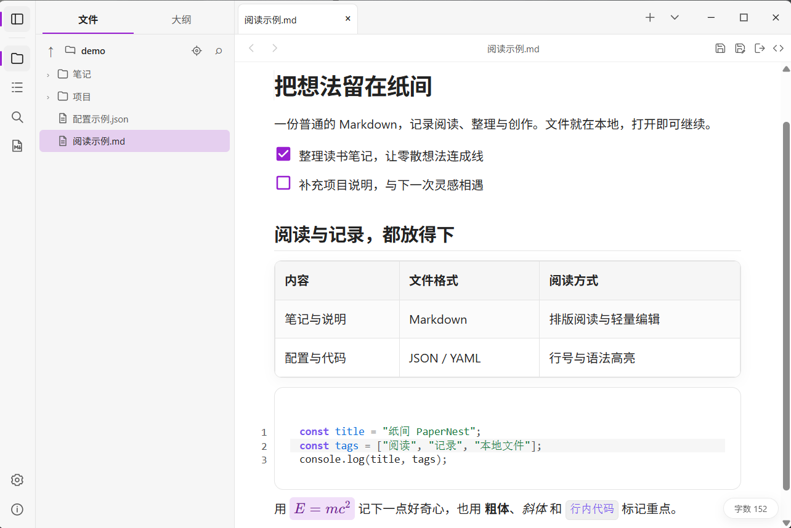
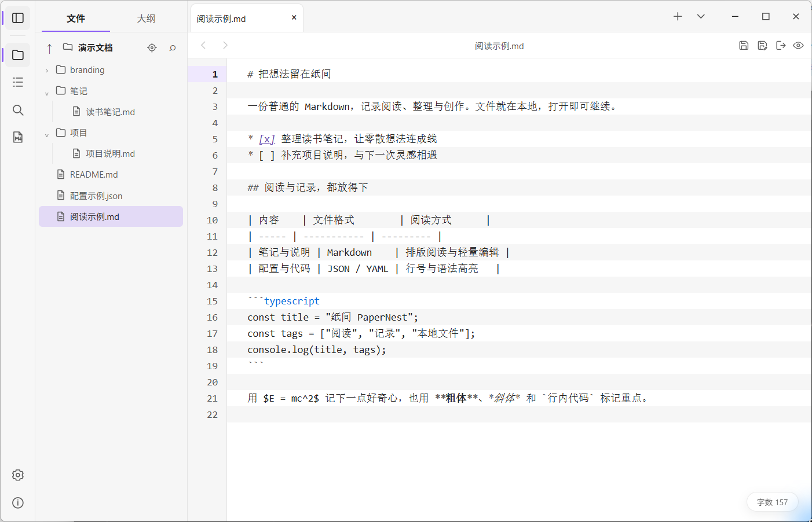
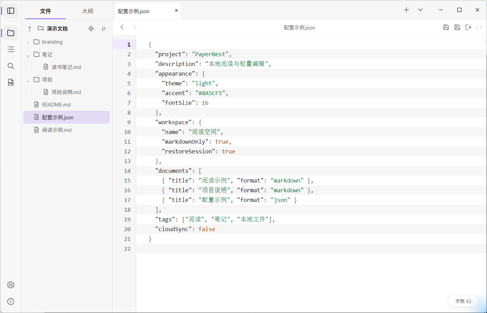
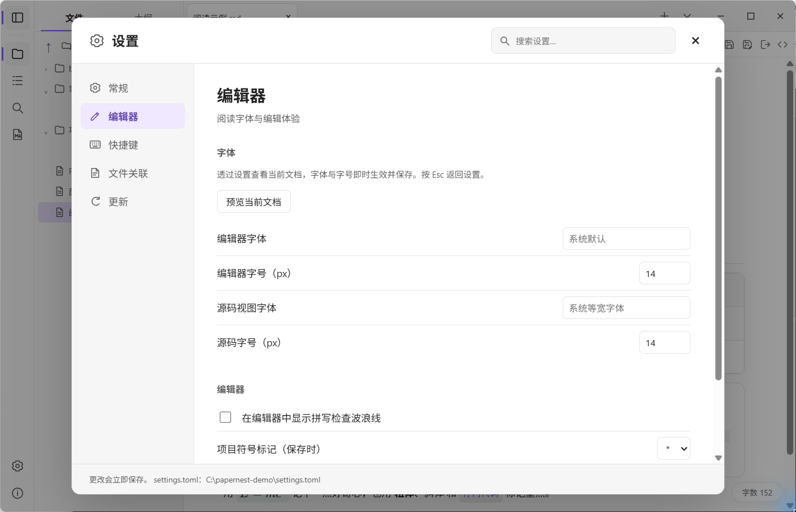
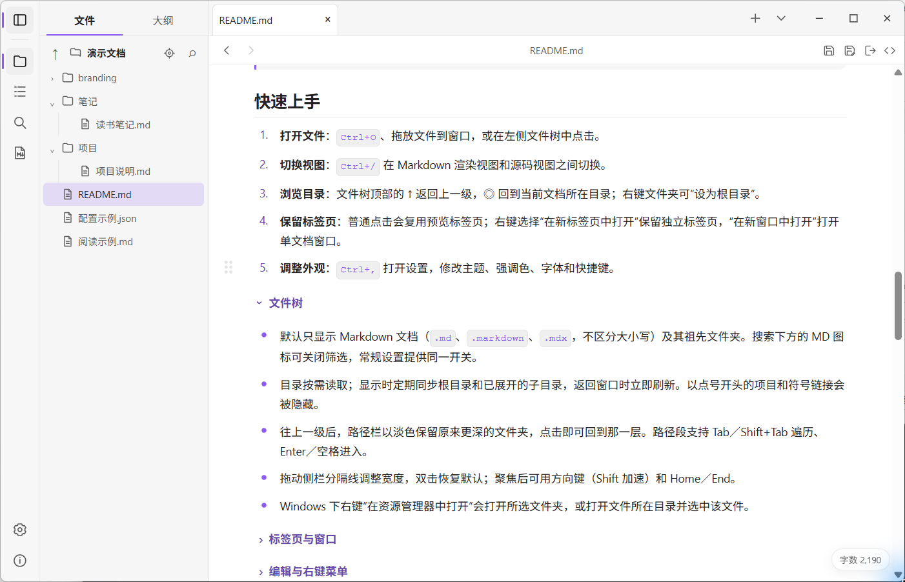

所见即所得的 Markdown
标题、列表、任务、表格、链接、脚注和数学公式直接呈现；GitHub 风格的 <details> 折叠区块可展开收起；一键切换到带行号与语法高亮的源码视图。
开源 · 本地优先 · Windows x64
纸间是一个面向本地文件的轻量桌面应用。Markdown 以所见即所得方式呈现，代码、配置、日志与图片也能直接查看。不需要导入，不需要账号，文件始终留在你的磁盘上。
便携 EXE 或 MSI 安装包 · 需要 WebView2 Runtime · MIT 许可


阅读优先，编辑随手可用。常用的事情不需要切换到别的软件。
标题、列表、任务、表格、链接、脚注和数学公式直接呈现；GitHub 风格的 <details> 折叠区块可展开收起；一键切换到带行号与语法高亮的源码视图。
JSON、YAML、TOML、代码、日志和纯文本进入 Code 模式，支持查找、替换与轻量修改；图片在独立标签页预览。
按需读取目录，默认聚焦 Markdown 文档；标签页可堆叠、收藏和恢复，配合大纲、目录内搜索、前进/后退和会话恢复。
新建、重命名、复制和删除都在应用内完成。删除前提示被引用的情况，文件移入系统回收站，随时可以恢复。
导出独立的 HTML，或通过系统打印流程输出 PDF。导出时会移除文档中的脚本等可执行内容。
浅色、深色或跟随系统；自定义强调色、字体与字号，快捷键可重新绑定，设置支持跨分类搜索。
以下均为实际运行截图。点击图片可查看原始尺寸。



按文件类型选择合适的打开方式。二进制文件不会被当作文本加载，无法预览时只给出一条轻提示，不打断阅读。
默认快捷键覆盖新建、保存、导出和查找。应用级快捷键可在设置中重新绑定，macOS 使用 Cmd 代替 Ctrl。
| 新建标签页 | Ctrl + N |
|---|---|
| 打开文件 | Ctrl + O |
| 保存 / 另存为 | Ctrl + S / Ctrl + Shift + S |
| 渲染 / 源码 | Ctrl + / |
| 查找 / 替换 | Ctrl + F / Ctrl + H |
| 导出 HTML / PDF | Ctrl + E |
| 设置 | Ctrl + , |
Markdown 保持原样读写，不转成私有格式，也不要求放进专用库或项目。
应用不会把文档同步到云端。设置保存在本地 settings.toml，便携版可放在程序旁。
自动检查更新默认关闭。开启后只获取本项目发布并经签名验证的版本，安装前仍需确认。
当前正式发行 Windows x64 版本。两种包功能相同，按使用方式选择。
运行需要 WebView2 Runtime（Windows 10/11 通常已内置）。Linux 与 macOS 版本暂未发行。也可以按 README 从源码构建。